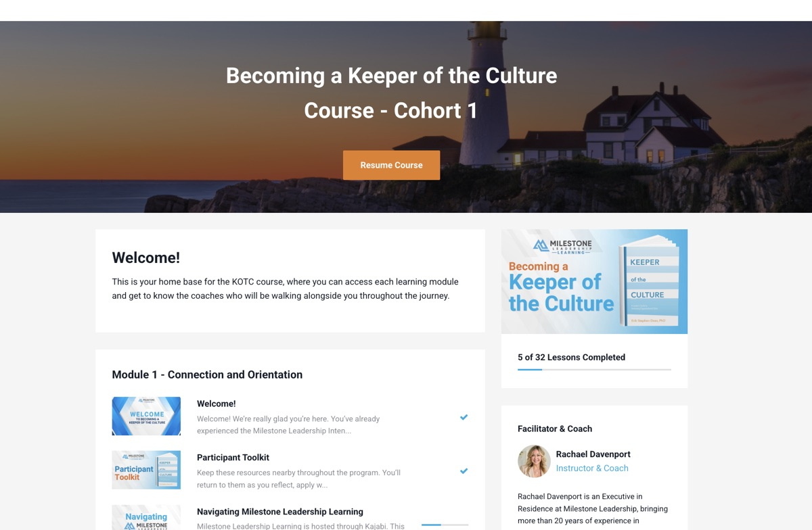
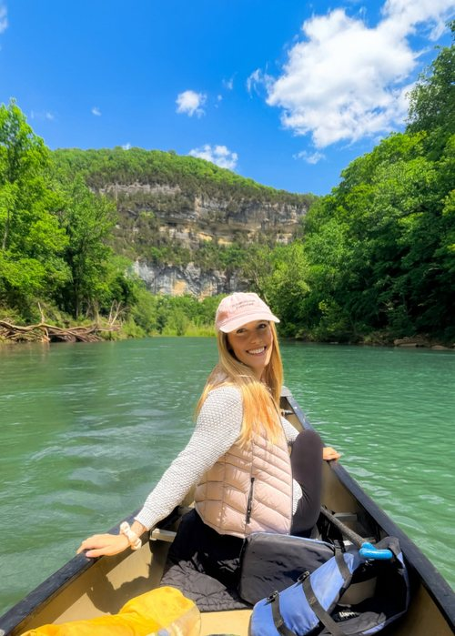
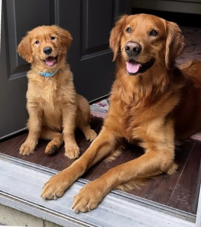
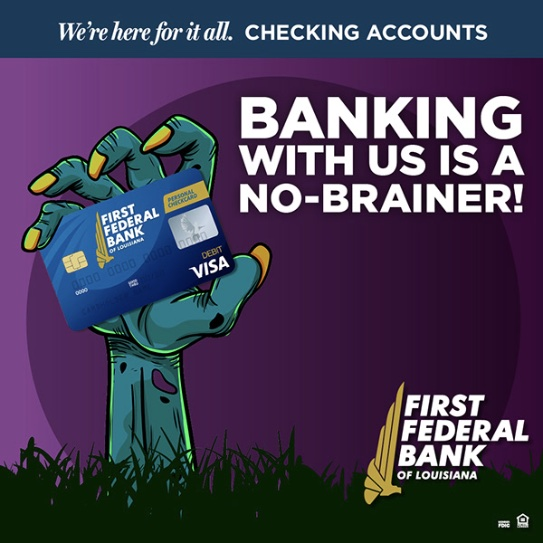
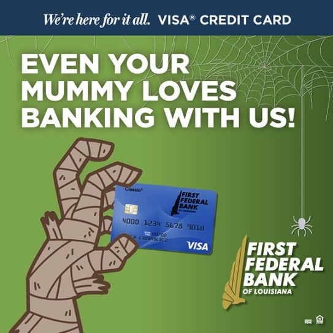
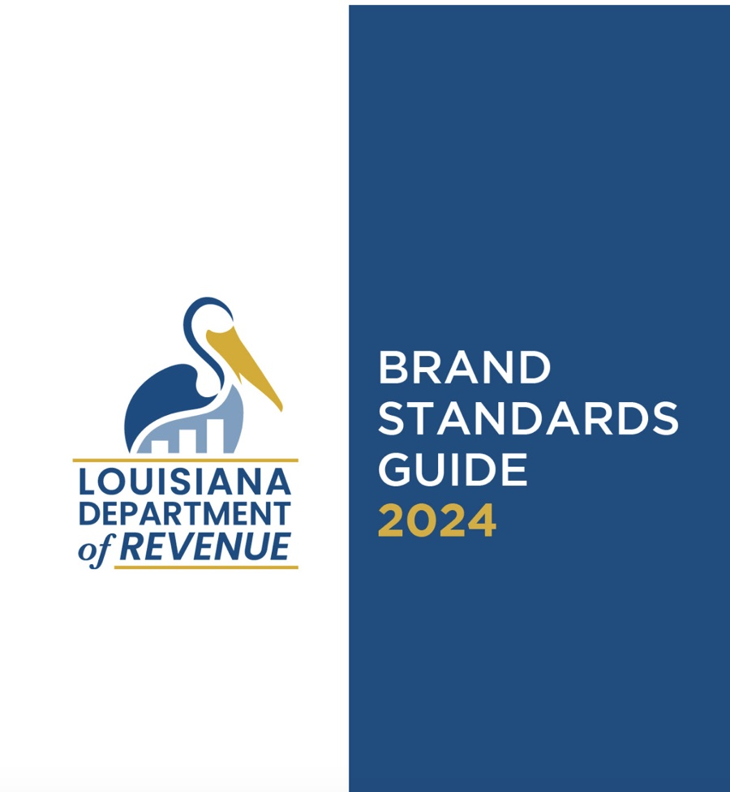
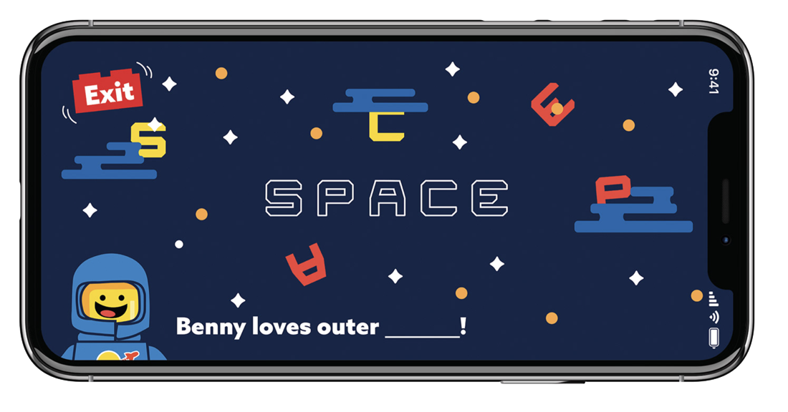

Milestone Leadership Learning
A digital learning and coaching experience designed to keep leadership development going beyond the classroom through guided content, practical tools, coaching, and opportunities to learn alongside others.
Always fetching ideas and
finding ways to bring them to life.
I’m a designer, creative, and growing innovator with nearly a decade of experience bringing ideas to life. I started in graphic design, but over the years I’ve realized I’m just as interested in the thinking behind what we create and how people actually experience it. I love asking questions, finding better ways to do things, and taking an idea from “what if?” to something real. These days, my work is a mix of design, communication, project coordination, and product innovation.


I love taking an idea and turning it into something that makes an experience better for someone.
probably
finding more
good ideas…

A digital learning and coaching experience designed to keep leadership development going beyond the classroom through guided content, practical tools, coaching, and opportunities to learn alongside others.




Originally imagined nearly a decade ago, I’m now revisiting and developing it into an interactive learning experience.
Milestone Leadership | Feb 2026 — Present
John Brown University Athletics | Aug 2025 – Jan 2026
Graham Group | Jan 2024 — Aug 2025
Cole Lusby Marketing (Remote) | Mar 2020 – Sep 2022
Self-Employed | 2017 – Present
Say hello by email or find me on LinkedIn.
connect.jessboyd@gmail.com